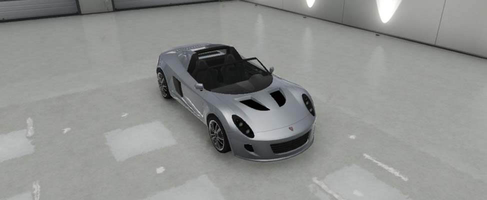

El Voltic es un vehículo deportivo que aparece en Grand Theft Auto V. Es fabricado por Coil. Se trata de un coche bastante chico, muy corto y angosto, con líneas muy deportivas, puede venir en versión coupé de techo fijo (a veces de color negro, y otras del color de la carrocería), o en versión descapotable. Tiene faros casi ovalados en la parte frontal, y una gran toma de aire en el paragolpes delantero.